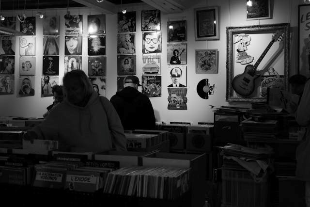

A música é uma das formas mais antigas e universais de expressão humana. Desde os primeiros sons rítmicos produzidos por nossos ancestrais até as complexas produções digitais do século XXI, ela acompanhou a humanidade em sua evolução cultural, espiritual e social. A seguir, exploramos a trajetória da música — seu início, desenvolvimento e transformação ao longo dos séculos.
As origens da música (Pré-história e Antiguidade)
Os primeiros registros musicais datam de milhares de anos antes da escrita. A música nasceu de forma espontânea, ligada à natureza e à vida cotidiana. Os sons dos ventos, das águas e dos animais inspiraram os primeiros humanos a criar ritmos e melodias, usando o corpo (palmas, batidas, voz) e instrumentos rudimentares feitos de ossos, madeira e pedra. Nas antigas civilizações — como Egito, Mesopotâmia, China, Índia e Grécia —, a música já possuía um papel ritualístico e religioso. Ela acompanhava cerimônias, funerais, colheitas e cultos. Na Grécia Antiga, filósofos como Pitágoras estudaram matematicamente os intervalos musicais, estabelecendo a base da teoria musical ocidental. A música era considerada uma arte ligada à harmonia do universo, com poder moral e educativo.
A música na Idade Média (séculos V a XV)
Com a queda do Império Romano, a música europeia passou a ser fortemente influenciada pela Igreja Católica. Surgiu o canto gregoriano, um tipo de música monofônica (com uma única linha melódica) usado nas liturgias religiosas. Esse período foi essencial para o desenvolvimento da notação musical, sistema que permitiu registrar sons no papel, garantindo a preservação e disseminação das composições. A partir do século XII, começaram a aparecer os primeiros sinais de polifonia — a combinação de várias melodias simultâneas —, especialmente com os compositores da Escola de Notre-Dame, como Léonin e Pérotin. A música passou a se distanciar da rigidez religiosa, abrindo espaço para a criatividade.
O Renascimento (séculos XV e XVI)
O Renascimento marcou uma nova visão do mundo, centrada no ser humano, na razão e na beleza. A música, assim como as artes visuais e a literatura, passou a valorizar a expressividade e a harmonia. Compositores como Giovanni Pierluigi da Palestrina, Josquin des Prez e Orlando di Lasso aperfeiçoaram a polifonia vocal, criando obras equilibradas e refinadas. Surgiram também os primeiros grupos instrumentais e a música secular (não religiosa) ganhou força, com madrigais e canções populares. A invenção da imprensa musical, no século XVI, permitiu que partituras fossem copiadas e distribuídas com mais facilidade, democratizando o acesso à música.
O Barroco (séculos XVII e XVIII)
O período barroco trouxe exuberância, contrastes e emoção à música. A harmonia tonal (baseada em acordes e tonalidades maiores e menores) foi definitivamente estabelecida, criando as bases da música ocidental moderna. Figuras como Johann Sebastian Bach, Antonio Vivaldi e George Frideric Handel foram fundamentais. Nessa época, floresceram novas formas musicais, como o concerto, a fuga, a ópera e a sonata. A música tornou-se também uma forma de entretenimento cortesão, refletindo o esplendor das monarquias europeias. A ópera, em especial, uniu teatro, poesia e música, encantando o público.
O Classicismo (século XVIII)
Com o Iluminismo, a música buscou a clareza, a simplicidade e o equilíbrio. O período clássico é marcado por estrutura e proporção — valores semelhantes aos da arquitetura e filosofia da época. Os compositores Wolfgang Amadeus Mozart, Joseph Haydn e Ludwig van Beethoven (em sua fase inicial) elevaram a sinfonia, o quarteto de cordas e a sonata a formas artísticas de grande importância. A música deixou de ser exclusivamente aristocrática e passou a ser também pública, com o surgimento dos concertos abertos e das orquestras profissionais.
O Romantismo (século XIX)
O Romantismo foi o período da emoção, da individualidade e da liberdade criativa. A música tornou-se um meio de expressão pessoal e subjetiva. Grandes compositores como Franz Schubert, Frédéric Chopin, Johannes Brahms, Franz Liszt, Richard Wagner e o próprio Beethoven (em sua fase madura) transformaram a música em uma linguagem profundamente emocional e narrativa.
Surgiu o conceito de música programática, que contava histórias ou evocava imagens por meio dos sons. O nacionalismo também ganhou destaque, com músicos que incorporaram temas e danças populares de seus países — como Tchaikovsky (Rússia) e Edvard Grieg (Noruega).
A música no século XX e XXI: modernidade e tecnologia
O século XX foi um período de ruptura e experimentação. A música passou por revoluções sonoras e conceituais. Surgiram novas linguagens, como o atonalismo de Arnold Schoenberg, o neoclassicismo de Igor Stravinsky, o minimalismo de Philip Glass, e o uso da música eletrônica e do jazz. A popularização do rádio, do disco e, posteriormente, da internet transformou completamente o modo de produzir e consumir música.
Estilos como blues, rock, pop, samba, bossa nova, hip-hop e música eletrônica tornaram-se símbolos culturais de gerações inteiras. Compositores e artistas como The Beatles, Bob Dylan, Elvis Presley, Michael Jackson, Chico Buarque, Caetano Veloso, entre outros, marcaram o século XX. Já no século XXI, a tecnologia digital e as plataformas de streaming democratizaram ainda mais a produção musical, permitindo que qualquer pessoa crie e divulgue suas obras globalmente.
A história da música é uma linha contínua de inovação, emoção e comunicação humana. De tambores primitivos a sintetizadores modernos, a música sempre refletiu as transformações sociais, espirituais e tecnológicas da humanidade. Mais do que uma arte, ela é uma linguagem universal que atravessa o tempo, conecta culturas e traduz sentimentos que as palavras, muitas vezes, não conseguem expressar.